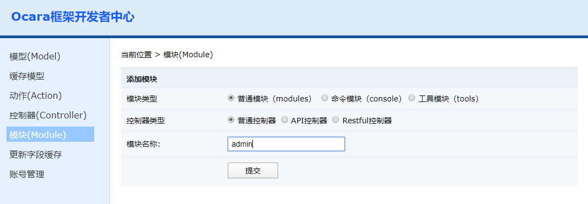

添加模块（Module）
（1）进入开发者中心，点击左边的"模板（Module）"菜单。右边会出现新建控制器的界面，填写模块名称并提交。  （2）新建成功后，会在application/controller中多出该模块目录。 如果模块已存在，是不能添加成功的，会出现错误提示。 如果您确实要重新添加该模块，请删除模块目录以及其内部的控制器和动作，包括模板文件，public下面的css、images和js文件。添加选项介绍
控制器类型 有普通控制器、Restful控制等类型。 （1）普通控制器，即平常所说的MVC模式控制器。 （2）Restful控制器，即符合Restful架构的控制器。 模块名称 填写的名称将作为模块目录名称，模块的主文件名，和模块的类名。